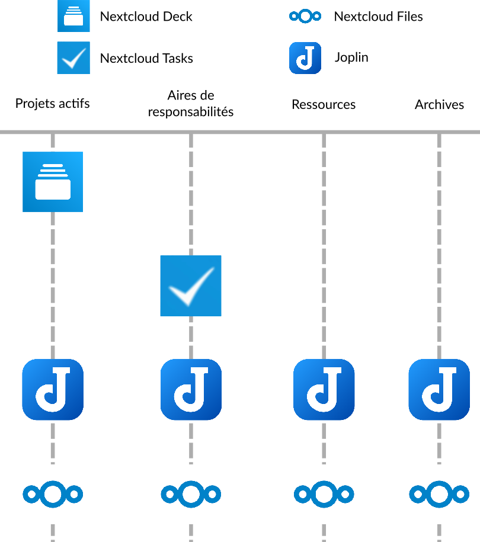
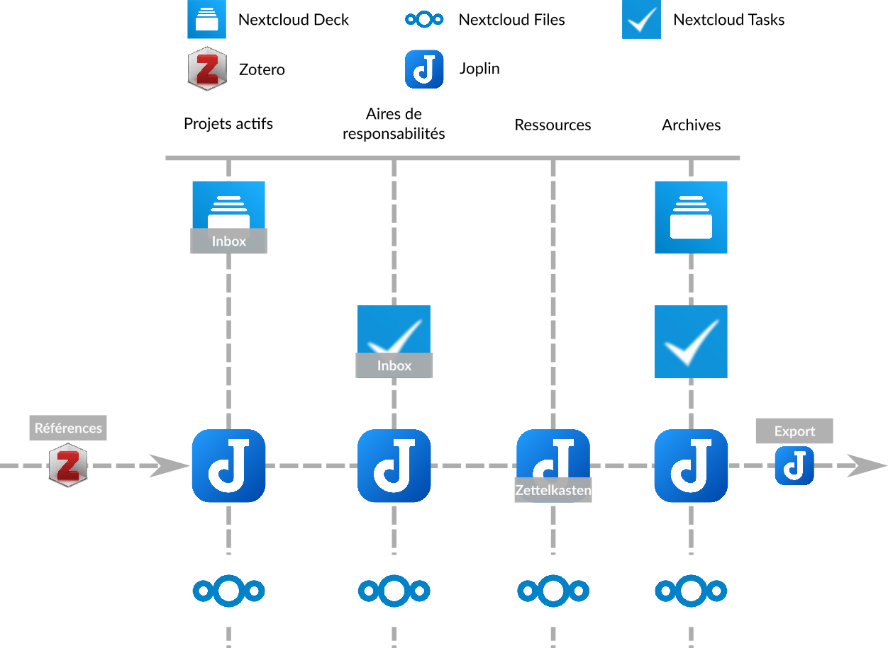

Un exemple de combinaison de tous ces outils et méthodes
Nous avons à présent vu quatre logiciels différents qui aident à l’organisation - Joplin, Zotero, Zettlr et Nextcloud. Nous avons également survolé trois méthodes d’organisations différentes - le Zettelkasten, la méthode P.A.R.A et l’inbox, et vous avez sûrement déjà compris comment ces logiciels peuvent s’utiliser avec ces différents méthodes. Vous avez aussi commencé à expérimenté les interactions entre ces 3 méthodes, qui ne sont pas mutuellement exclusives, car elles peuvent se compléter.
Je vous propose ainsi un petit récapitulatif en vous présentant un example de combinaison de ces logiciels et de ces méthodes ensembles.
La structure globale : la méthode P.A.R.A
La méthode P.A.R.A définit la structure globale de cet example. Pour mieux la comprendre, je vous réfère à la section sur la méthode P.A.R.A.
Ainsi, 4 logiciels sont utilisés :
- Nextcloud Deck (qui contient des données relatives à des projets, sous forme de tableaux Kanban)
- Nextcloud Tasks (qui contient des données relatives à des aires de responsabilités, sous la forme de taches à cocher)
- Joplin (qui contient des notes relatives aux projets, aux aires de responsabilités, mais aussi à des ressources et aux archives)
- Nextcloud Files (qui contient des fichiers relatifs aux projets, aux aires de responsabilités, aux ressources et aux archives)
On pourrait ainsi représenter l’organisation des logiciels :

La gestion des ressources : Le Zettelkasten
Au sein de la structure globale définie par la méthode P.A.R.A, il est possible d’insérer le Zettelkasten comme manière de structure les ressources sur les sujets qui nous intéressent.
C’est Joplin qui va se charger de cette tache, et qui va nous permettre de stocker nos ressources sous la forme d’un Zettelkasten dans cet example. Pour plus de détail sur comment un Zettelkasten est structuré et fonctionne, je vous réfère à la section le concernant.
La gestion des taches : la inbox
Enfin, les taches définies pour les différentes aires de responsabilités de la méthode P.A.R.A (ici dans Nextcloud Tasks), mais aussi celles définies pour nos différents projets (ici dans Nextcloud Deck) peuvent être gérée à la manière d’une inbox.
Ainsi, toutes les taches dans Nextcloud Tasks et cartes dans Nextcloud Deck peuvent être associés à des priorités, puis être triées par priorité afin de rapidement visualiser quelles taches doivent être faites. Pour en savoir plus sur la gestion des taches à la manière d’une inbox, je vous réfère à la section sur cette méthode.
La gestion des références dans les ressources : Zotero et le plugin BibTex de Joplin
Au sein même du Zettlekasten, ou bien dans d’autres notes qui concernent vos projets ou vos aires de responsabilités, il vous est possible d’insérer des références bibliographiques en utilisant Zotero et Joplin.
De cette manière, vous aurez des documents propres et référencés sans avoir à gérer vous même, à la main, une base de données de références (ce qui peut être très compliqué). Pour plus d’informations sur l’utilisation de ces deux logiciels, je vous renvoie à leurs sections respectives.
L’export des documents en markdown avec Joplin
Joplin peut aussi jouer le role d’un bon exportateur de documents en langage markdown. Bien que Joplin est capable d’exporter vos notes en markdown au format .pdf ou .html, d’autres logiciels (comme Pandoc ou Zettlr) sont capable de le faire dans un plus grand nombre de format, et aussi d’y ajouter des références.
Graphique récapitulatif
Au final, voici la structure de cette example, à travers les différents logiciels utilisés :
